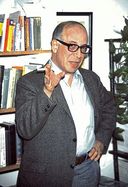

Philip Klass
Aviation journalist and UFO skeptic, 1919 to 2005

A senior editor at Aviation Week who became the most prominent UFO skeptic of the late 20th century, writing several books that offered ordinary explanations for famous cases. 1
Open in the interactive Watcher
Related
- UFOs Explained UFOs Explained, 1974
Sources
- Philip J. Klass Wikipedia